Autism
ASD (Autism Spectrum Disorder) is a developmental disorder. The differences appear early in a
child's development—although diagnosis may occur later.
The term "spectrum" in autism spectrum disorder refers to the wide range of experiences (strengths,
difficulties) and their intensity for each individual.
The criteria of the DSM-5 for diagnosing Autism focuses on;
- Difficulties in social communication and social interaction across multiple contexts
- Social-emotional reciprocity
- Nonverbal communicative behaviors
- Developing and maintaining relationships
- Restricted, repetitive patterns of behavior, interests, or activities, as manifested by at least two of the following
A1. Differences in social-emotional reciprocity
Social-emotional reciprocity is the back-and-forth exchange of feelings, attention, and
responsiveness between two people.
It happens fast, often below conscious awareness, and most people never once think about it.
Part of that social-emotional reciprocity is knowing how and when to initiate or respond to others'
social interactions.
Autistic people may display:
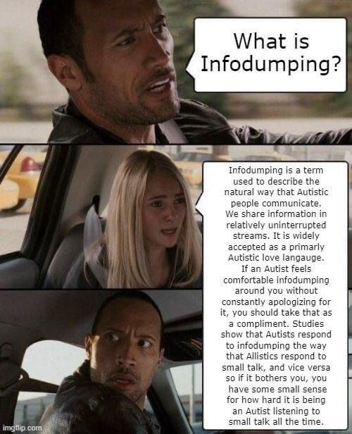
- Unconventional social approach
- Failure to initiate or respond to social interactions
- Failure of normal back-and-forth conversation
- Finding small talk tiring or pointless
- Scripted or memorized responses to social situations that feel stilted to others
- Preferring conversations that explore topics deeply rather than staying surface-level
- Responding to questions with detailed explanations rather than brief social responses
- Reduced spontaneous sharing of excitement, achievements, or distress with others
- One-sided conversations dominated by a specific interest, "monologuing"
- Feeling unsure when a conversation is expected to shift topics
- Limited or atypical use of eye contact, gesture, or facial expression during emotional exchanges
- Difficulty calibrating emotional responses to match the situation's intensity
- Delayed reactions, feeling the emotion fully, but hours after the moment has passed
- Processing overload that looks like withdrawal.
This doesn't mean autistic people lack the desire for connection.
It means the typical signals and rhythms of social exchange may not come intuitively.
Autistic people engage in emotional reciprocity differently, not uniformly less:
Some struggle to initiate it.
Others respond but with a delay.
Some respond in ways that feel mismatched in intensity or register to neurotypical observers.
And some have learned to perform it so fluently that clinicians miss them entirely.
How autism affects social skills is more than a matter of awkwardness or shyness.
It traces back to how the brain prioritizes, processes, and assigns meaning to social information, a
fundamentally different operating system, not a broken one.
Research shows that when interaction partners adjust their approach, matching an autistic child's
pace or imitating their behavior, reciprocal engagement increases dramatically.
In studies where adults imitated autistic children's play with toys, the children made longer eye
contact, showed more creative exploration, and displayed considerably more positive
emotion.
When reciprocity differences go unrecognized, autistic people get labeled as cold, rude, or
indifferent. Understanding what these differences actually look like, across different ages and
contexts, is the first step to doing better.
A2. Differences in nonverbal communicative behaviors used for social interaction
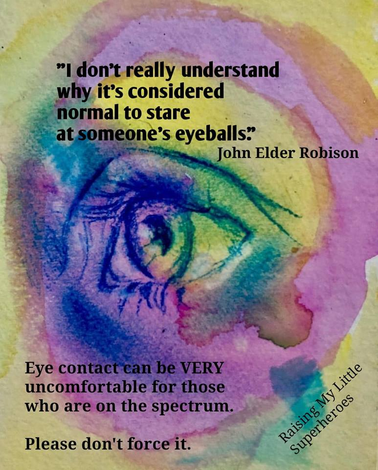
- Poorly integrated verbal and nonverbal communication
- Differences in eye contact and body language
- Maintain less eye contact, or sometimes stare longer than expected
- Difficulty in understanding and use of gestures
- Overdramatic or 'flat' facial expressions and nonverbal communication
- Speak with a tone or volume that others interpret differently than intended
- Smile or laugh at unexpected moments due to nervousness or processing delays
Autistic people often approach social communication more analytically because they tend to process
social cues, like facial expressions, tone, and body language, with conscious effort rather than
intuition.
They may carefully observe patterns and follow internalized rules to understand interactions,
sometimes using strategies like rehearsing conversations or mimicking gestures.
This deliberate approach can be mentally tiring.
Such analytical processing reflects different neural patterns rather than a lack of social skill and
highlights the strengths of careful observation, clear communication, and thoughtful interaction.
A3. Differences in developing, maintaining, and understanding relationships
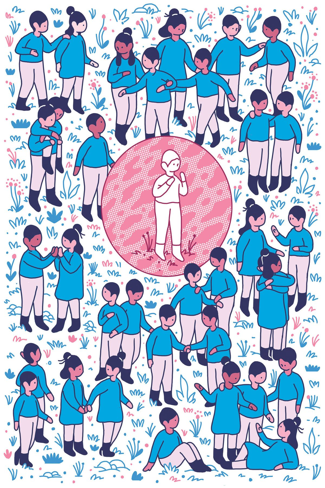
- Difficulties adjusting behavior to suit various social contexts
- Struggling to interpret indirect hints or social subtext
- Finding it difficult to determine whether someone is being friendly or sarcastic.
- Difficulties in sharing imaginative play or in making friends
- Feeling confused by rapidly shifting group dynamics
- Preferring structured interactions built around shared activities or interests
- Absence of interest in peers
Autistic people may interact differently in social situations not because they are uninterested in others, but because they process social cues, like tone, expressions, and body language, in a unique way. These differences in understanding and responding to social information can sometimes lead to misunderstandings with non-autistic people. Both sides may interpret each other's signals differently (double empathy problem), which is why communication can feel challenging. Recognizing that autistic social differences reflect distinct cognitive and sensory processing rather than lack of interest helps promote empathy, patience, and supportive communication.
B1. Stereotyped or repetitive motor movements, use of objects, or speech - self-stimulatory behaviors / stimming-
Stimming is repetitive physical movement, sounds, words, or interactions with objects
There are lots of reasons people may engage in these behaviors, including but not limited to:
- Manage sensory input: It helps the body and brain manage input that feels like too much, too little, or too unpredictable. Eg - to calm down when they're overwhelmed by noise, crowds, or bright lights or when they need more sensory input to stay alert or focused.
- To regulate emotions: "Autistic people commonly report emotional regulation as a reason for stimming," Howk notes. In one study of adults who stim, participants said it's a helpful coping mechanism for dealing with anxiety (72%), overstimulation (57%) or to calm down (69%).
- Express themselves: Stimming can also express emotions that are hard to put into words. Excitement, joy, frustration, and nervousness can all trigger repetitive movements
- To show excitement: Emotional self-regulation can apply to joyful emotions, too. Ever been so excited about something that you jump up and down or clap your hands without even meaning to? Some people stim when they're very happy or enthusiastic, described in the study as "positive emotional states."
- Because it's enjoyable: No reason required! In the same study, 80% of people said they just like the way it makes them feel.
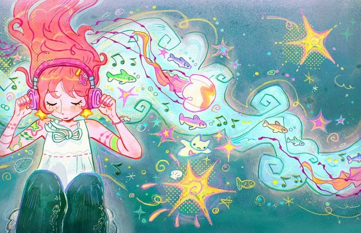
Types of Stimming:
- Oral (taste): chewing on objects, licking, biting the inside of the cheek
- Olfactory (smell): Repeated sniffing of people or objects
- Tactile (touching or feeling): Hand-flapping, finger-tapping, skin-rubbing, scratching textures or other types of repetitive hand movements (for example, stretching fingers or clenching and unclenching the fists).
- Visual (sight-related): Blinking repeatedly, eye-rolling, lining up objects, staring at lights, moving fingers in front of the eyes
- Vestibular (movement): Rocking, spinning, swinging, jumping, twirling or pacing.
- Proprioceptive: pushing against walls, squeezing hands together, seeking deep pressure
B2. Insistence on sameness, inflexible adherence to routines, or ritualized patterns of verbal or nonverbal behavior
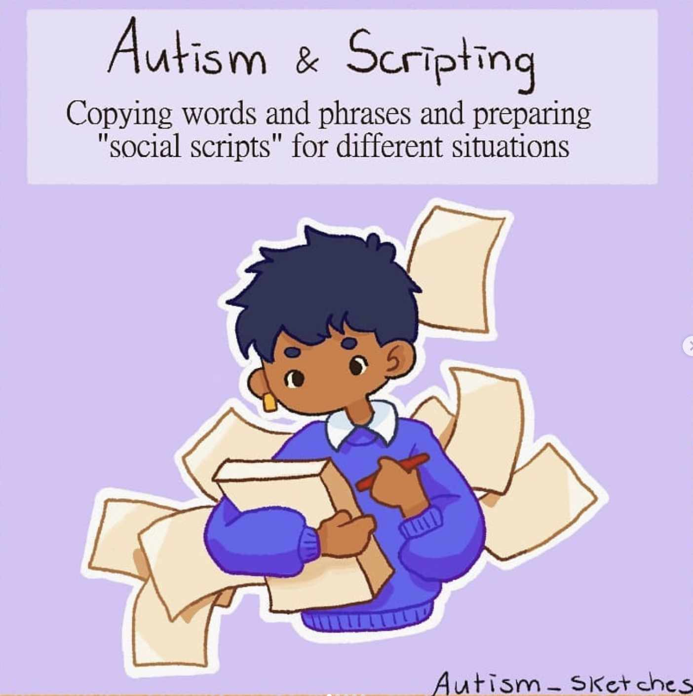
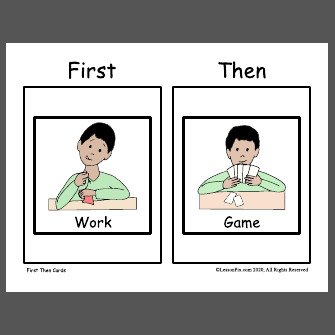
- Following consistent daily routines
- Preferring predictable schedules
- Feeling distressed by sudden changes in plans
- Difficulties with transitions
- Needing time to prepare for transitions
- Rigid thinking patterns
- Greeting rituals
- Need to take same route or eat same food every day
- Wearing the same clothes repeatedly
- Arranging objects or environments in specific ways
B3. Highly restricted, fixated interests that are abnormal in intensity or focus
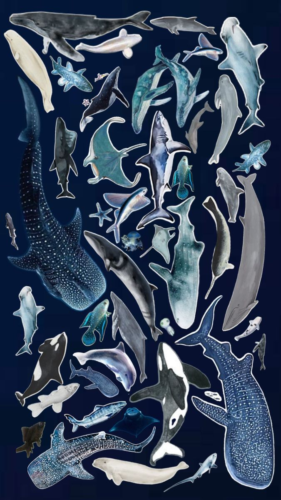
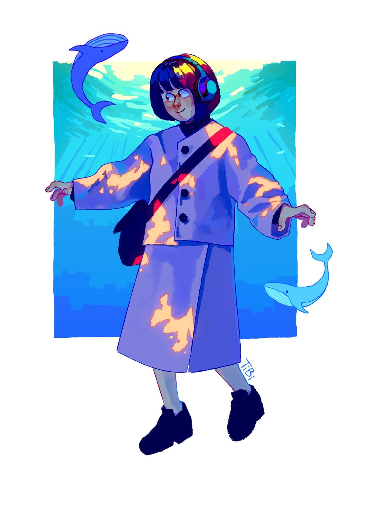
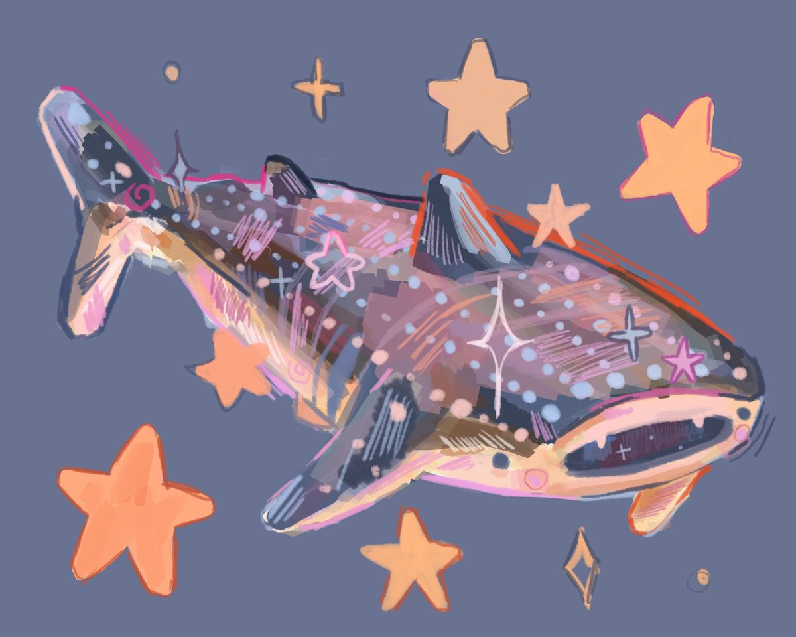
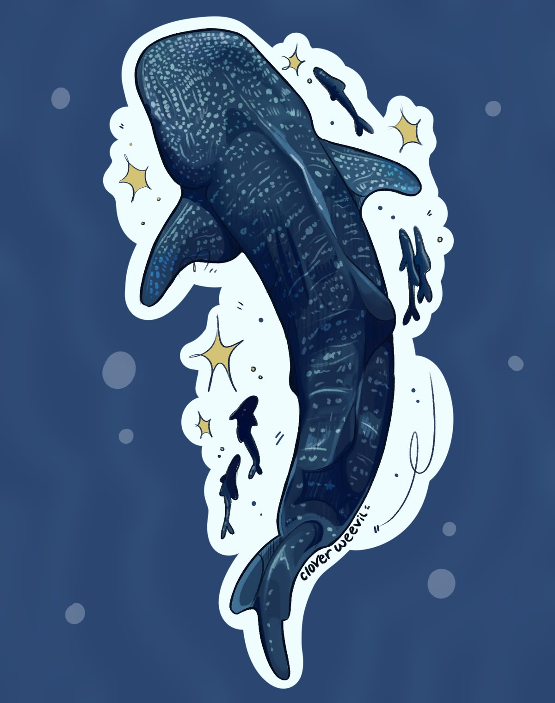
- Excessively circumscribed or perseverative interests
- Developing extensive knowledge about a subject
- Spending long periods researching or exploring a topic
- Feeling deeply engaged when learning or analyzing a topic and forgetting other activities or needs
- Collecting information, objects, or systems related to an interest
- Strong attachment to or preoccupation with unusual objects
- Mastering complex systems or patterns
B4. Hyper- or hypo reactivity to sensory input or unusual interest in sensory aspects of the environment
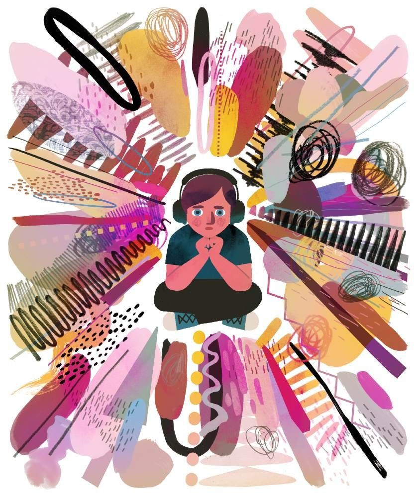
This difference may involve heightened sensitivity to:
- Sound
- Light
- Textures
- Smells
- Temperature
- Physical sensations
- Apparent indifference to pain/temperature
- Adverse response to specific sounds or textures
- Excessive smelling or touching of objects
- Visual fascination with lights or movement
- Discomfort in noisy or crowded environments
- Sensitivity to clothing fabrics or tags
- Difficulty with bright lights or visual clutter
- Strong reactions to certain smells or textures
- Seeking movement, pressure, or repetitive motion
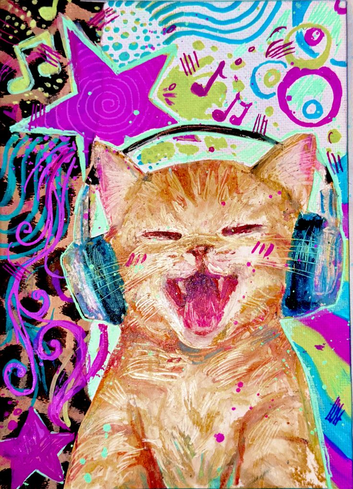